|
PRESENTATION
Le plugin est le fruit de la réalisation du widget MeteoFull. De ce fait, le manque de fonctionnalités, de commandes pour son utilisation dans les scénarios, ... a fait naître l'obligation de développer ce plugin. Il permettra de faire tout ce que le widget faisait, à savoir bénéficier de la météo quotidienne et heure par heure pour 5 jours, mais également d'obtenir des statistiques, une personnalisation toujours plus poussée, ...
Pré-requis aucun, à part un Jeedom 4.0 minimum.
Ce plugin fut un projet mené à trois développeurs. En effet, jcamus86 et jvanoost m'ont rejoint pour la réalisation de ce plugin. Sans eux, il ne pourrait y avoir de plugin. Je tiens à les remercier. De plus, sans les béta-testeurs qui sont Toms, iPapy, Olive, Foulek57, on n'aurait pu sortir le plugin tout de suite. Merci également à eux.
|
- Version : 01.01
- Date mise à jour : 22/12/2020
- Dernière modification : Corrections
|
DOCUMENTATION
DESCRIPTION
- Fonctionnalités :
- - Prévision de la météo sur 5 jours.
- - Prévision de la météo sur 24h pour chacun des 5 jours.
- - Condition météorologique actuelle, pour les 5 jours et sur 24h pour les 5 jours.
- - Température actuelle, min et max pour les 5 jours et sur 24h pour les 5 jours.
- - Température ressentie sur 24h pour les 5 jours.
- - Vent (vitesse et direction) actuel, moyenne pour les 5 jours, et sur 24h pour les 5 jours.
- - Rafales actuelles, max pour les 5 jours, et sur 24h pour les 5 jours.
- - Précipitations actuelles, cumul pour les 5 jours, et sur 24h pour les 5 jours.
- - Humidité actuelle, moyenne pour les 5 jours, et sur 24h pour les 5 jours.
- - Pression actuelle, moyenne pour les 5 jours, et sur 24h pour les 5 jours.
- - Ephéméride (lever & coucher de soleil, indice UV, lever & coucher de la lune, phase de la lune).
- Commandes disponibles :
- - Toutes les prévisions quotidiennes ci-dessus sont disponibles en commandes. En effet, nous ne pouvons pas créer toutes les données heure par heure en commandes. Sans quoi, votre jeedom ne pourrait pas le supporter.
INSTALLATION & CONFIGURATION
- Installation :
- - Aucune action supplémentaire à part installer le plugin depuis le market.
- Configuration :
- - Aucune action à configurer à la suite de l'installation du plugin.
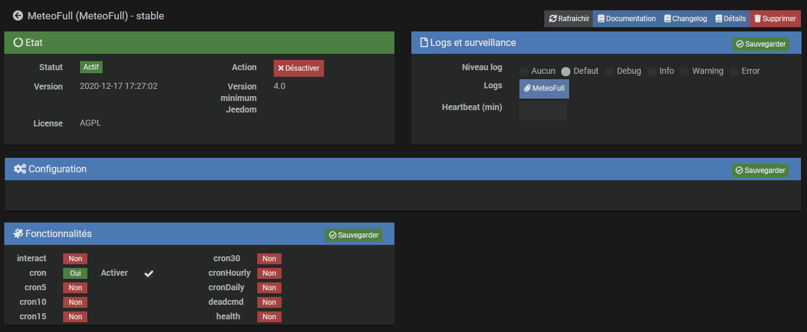
EQUIPEMENT
- La page d'équipements permet de :
- - Ajouter un équipement.
- - Modifier la configuration si besoin (pour le moment il n'y en a pas).
- - Se rendre sur le site de la documentation.
- - Se rendre sur le fil du plugin sur le community. Le lien direct sera disponible sous peu.
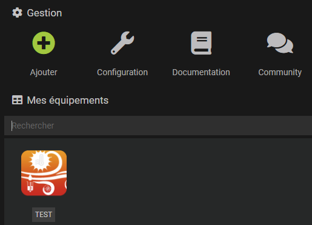
- Comment ajouter un nouvel équipement ?
- - Une fois renseigné le nom de l'équipement, on arrive sur cet écran.
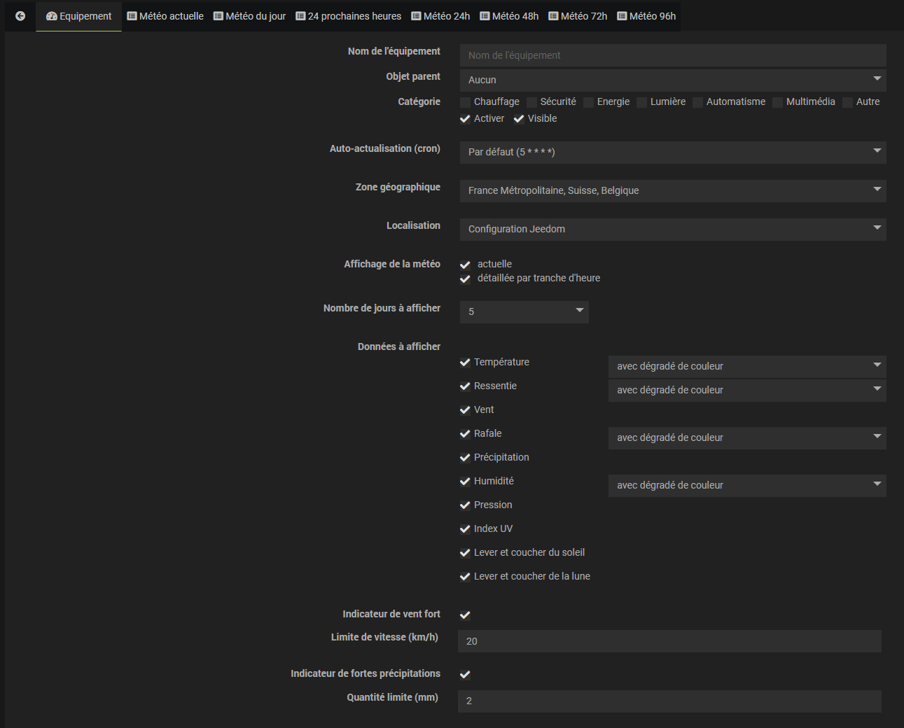
Dans un premier temps, nous allons voir les paramètres globaux au plugin.
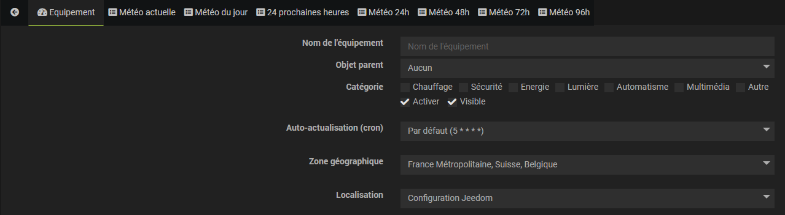
- Définition de tous les champs :
- - Les classiques de tous les équipements (Nom, Objet parent, Catégorie, Activer, Visible).
- Auto-actualisation (cron) :
- - Permet de définir l'auto-actualisation des données du plugin. Par défaut le cron est réglé sur toutes les heures à la 5ème minute. Pour information, si les données ne changent pas, le widget ne sera pas re-généré, on gardera celui en cache.
- Zone géographique :
- - Pour le moment il n'y a qu'un seul choix. En effet, aucune autre API disponible fournit les mêmes données que celles avec laquelle le plugin tourne. Malheureusement cette API n'est fonctionnelle que pour la France Métropole, la Suisse et la Belgique. Nous n'avons pas oublié les autres. Nous sommes toujours en train de chercher des solutions. Si jamais vous connaissez des API offrant les mêmes données, n'hésitez pas à nous le faire savoir sur le fil du plugin du community.
- Localisation :
- - Ici, vous avez le choix entre "Configuration Jeedom" et "Configuration "Manuelle". Si vous avez renseigné votre localisation dans la configuration Jeedom par la latitude et la longitude, le plugin peut récupérer cette localisation. Cependant, si vous ne l'avez pas renseignée, ou bien pour un second équipement, vous devez renseigner manuellement la latitude et la longitude du lieu en question. Par défaut, ce sont les coordonnées de Paris.
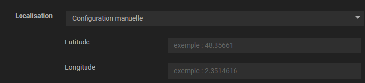
Maintenant, passons aux paramètres concernant le design du widget.
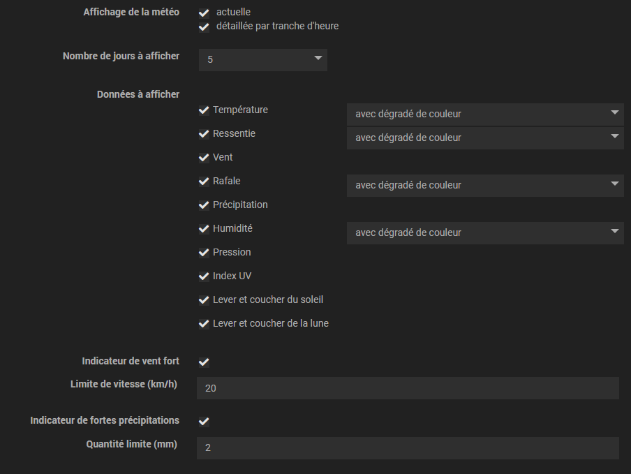
- Affichage de la météo :
- - Cela vous permet de décider si vous voulez afficher dans le widget la météo actuelle, ainsi que le panneau de la météo heure par heure pour le jour sélectionné.
- Nombre de jours à afficher :
- - De 1 à 5 jours à afficher dans le widget. Donc si vous sélectionnez 5 jours, vous aurez les prévisions jusqu'à j+4 (le jour actuel + 4 jours).
- Données à afficher :
- - Ici, vous choisissez les données que vous voulez afficher dans le widget. Pour certaines données, vous pouvez en plus sélectionner si vous souhaitez un dégradé de couleurs ou pas. Attention, pour la température, si vous décidez de ne pas avoir de dégradé, vous aurez dans ce cas, du bleu pour le minimum et du rouge pour le maximum seulement pour les prévisions quotidiennes. Sinon pour tout le reste, il n'y aura pas de couleurs de fond.
- Indicateur de vent fort :
- - Permet d'avoir une icône afin d'attirer l'attention sur la prévision du vent si la vitesse de ce dernier dépasse le seuil indiqué. Par défaut il est fixé à 200 km/h et non activé.
- Indicateur de fortes précipitations :
- - Comme ci-dessous, une icône apparaîtra si vous l'activez et s'il y a dépassement du seuil renseigné (par défaut à 50 mm).
- Sauvegarde :
- - Il ne vous reste plus qu'à sauvegarder, et tout est fini au niveau du paramétrage. Attention, en fonction des performances de votre système, il peut y avoir un peu d'attente lors de la sauvegarde. En effet, c'est en sauvegardant que le plugin crée toutes les commandes utilisables. Ne vous inquiétez pas, il n'y en a pas pour 1 heure. En général au bout de 30 secondes, c'est fini. Mais si malheureusement votre Jeedom est installé sur une machine avec peu de ressources, cela peut prendre un peu plus de temps. Ensuite, plus de soucis. Tout marche sans latence.
UTILISATION
Pour information, aucune commande n'est historisée par défaut. Si vous le souhaitez, c'est à vous de le paramétrer pour chacune des commandes souhaitées.
- Commandes conditions actuelles
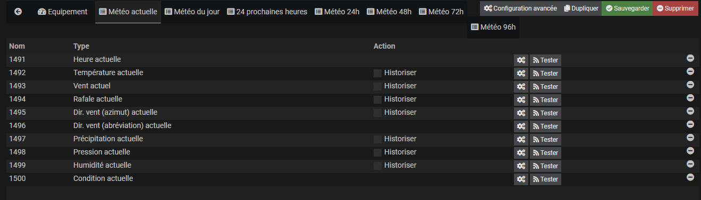
- Commandes conditions du jour
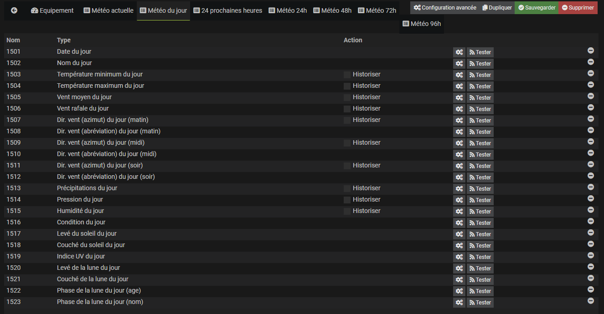
- Commandes conditions des 24 prochaines heures
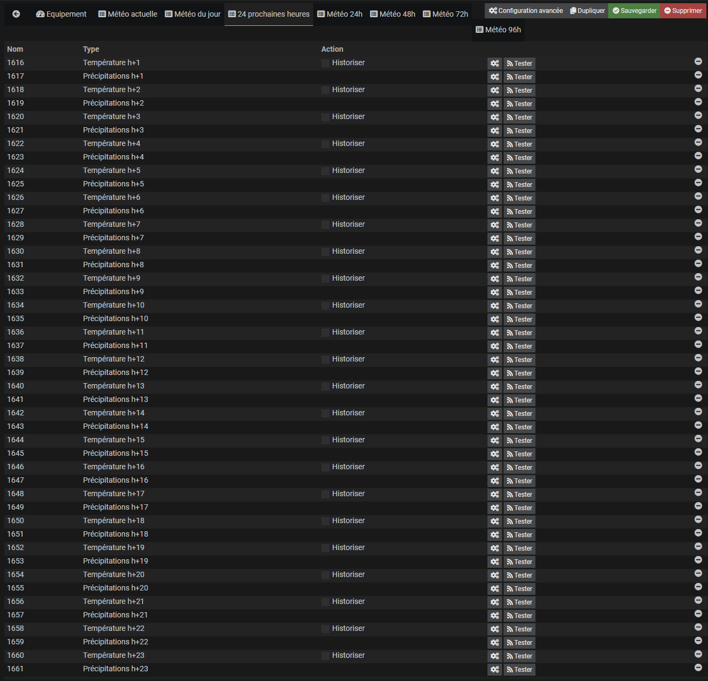
- Commandes conditions du lendemain
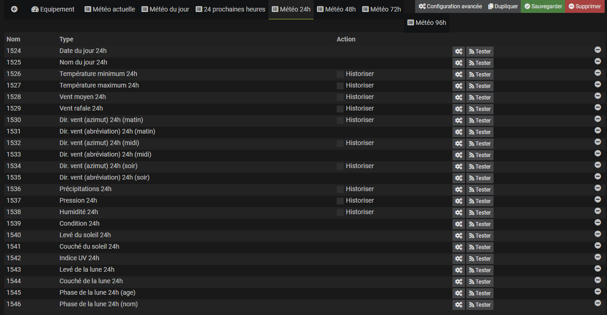
- Commandes conditions du sur-lendemain
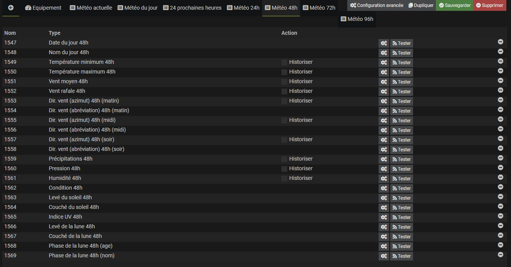
- Commandes conditions dans 3 jours
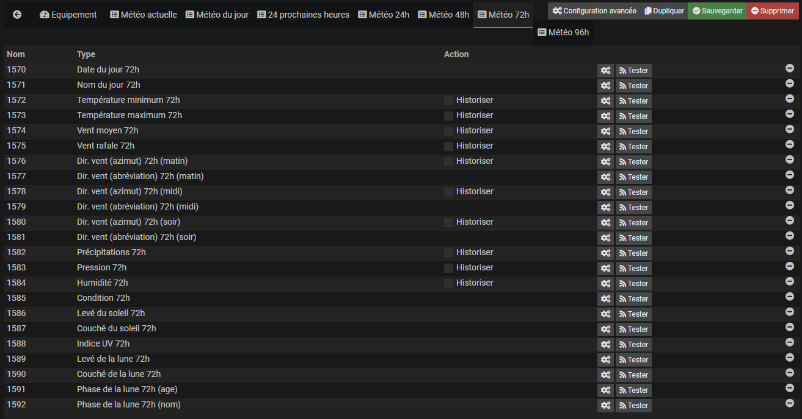
- Commandes conditions dans 4 jours
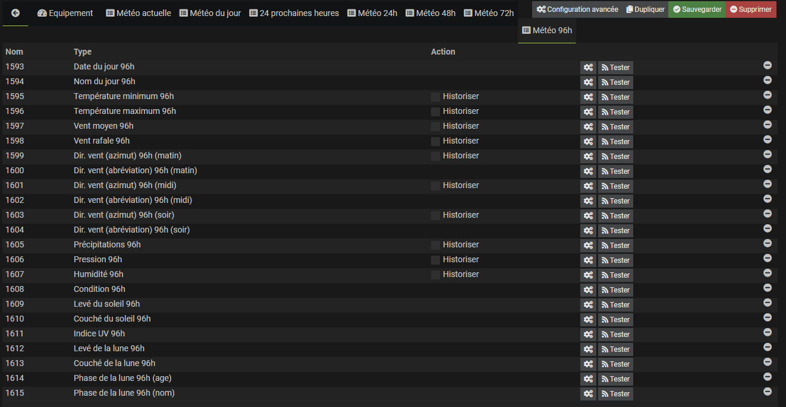
Voici plusieurs rendus possibles de widget.
- Full, thème dark
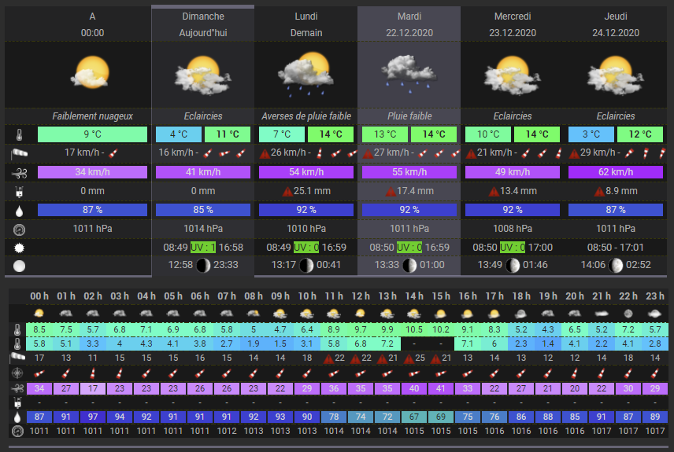
- Full, thème legacy
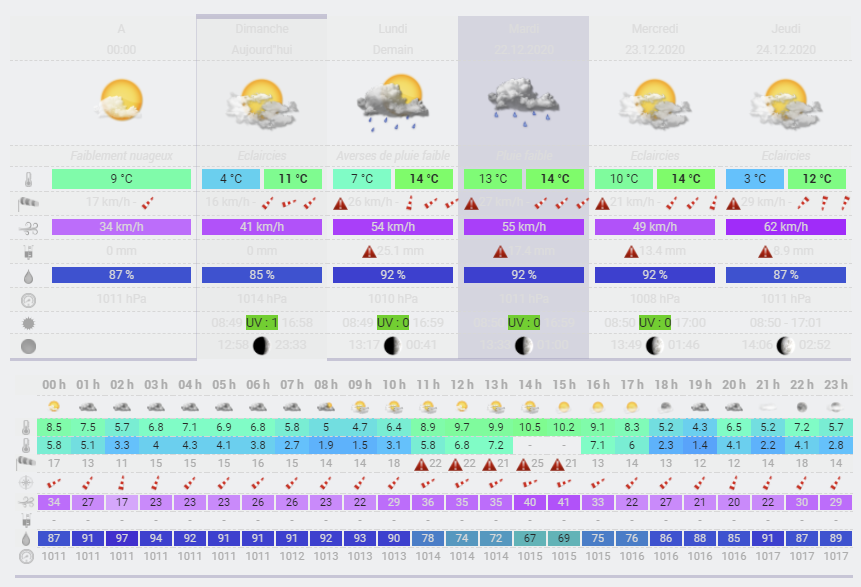
- Full, thème light
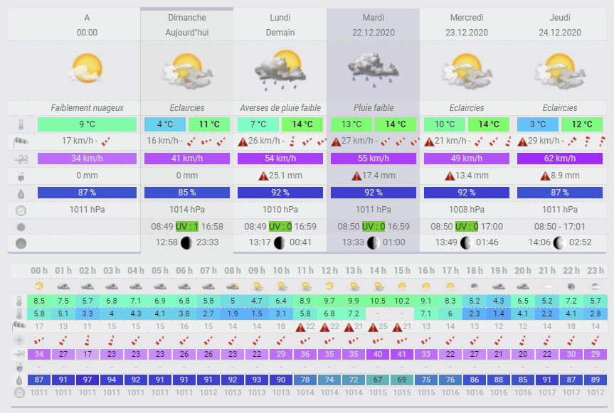
- Sans le panneau des conditions horaires, thème dark
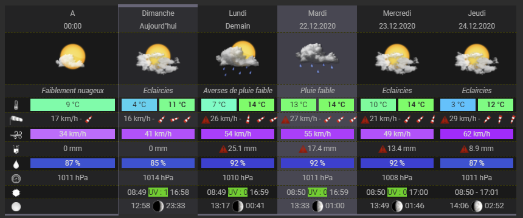
- 3 jours d'affichés, thème dark
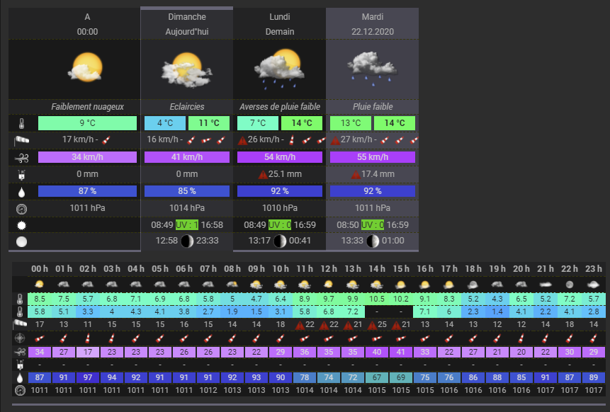
|